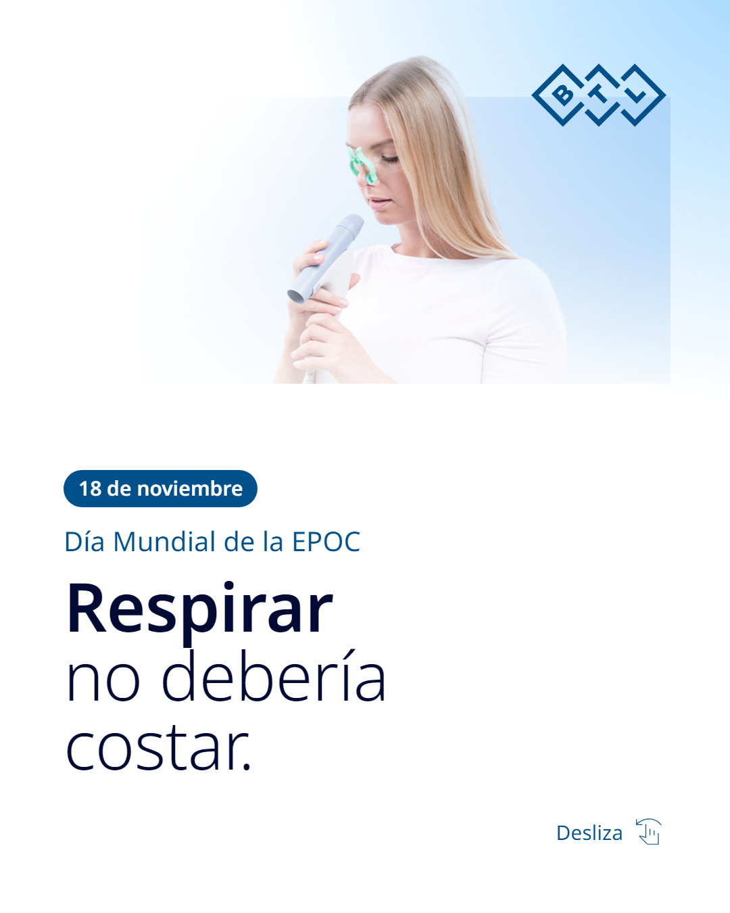
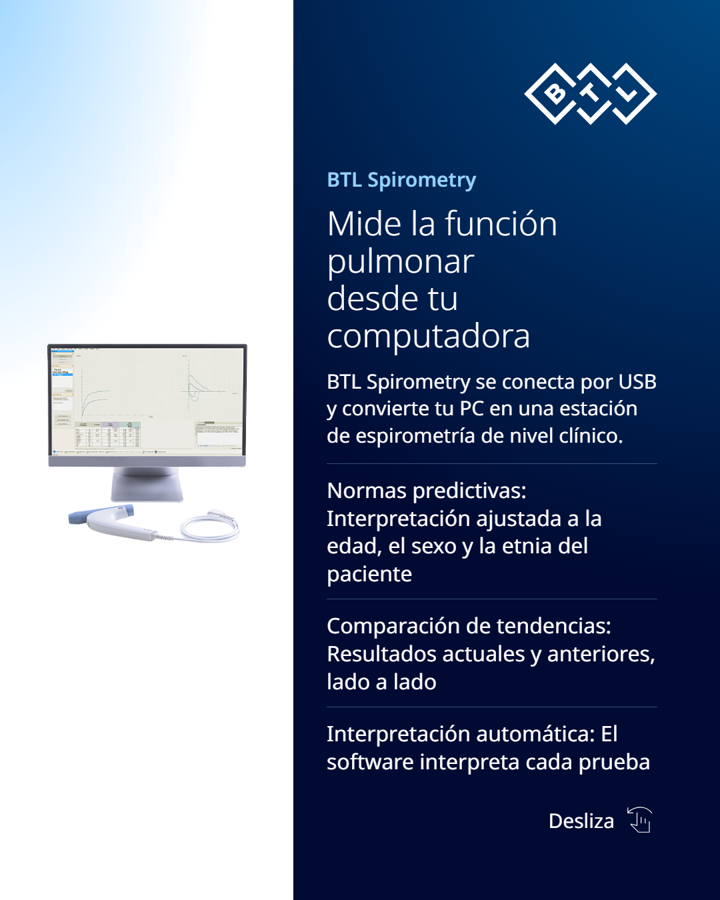
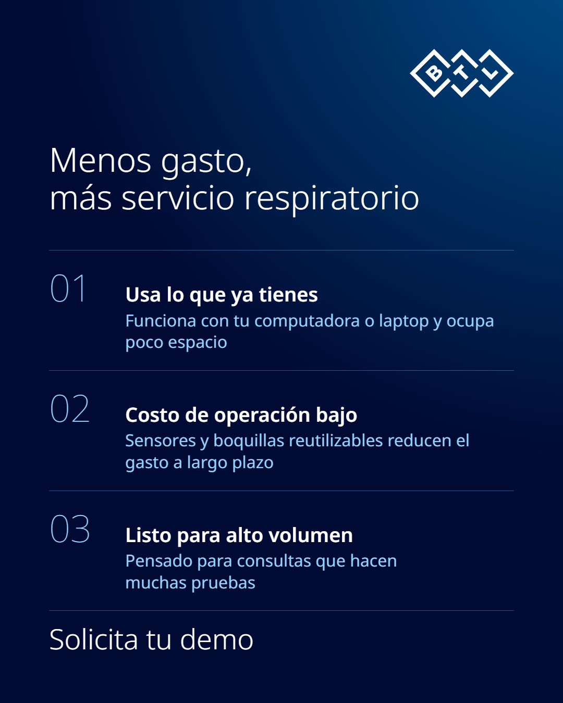

Hoy es el Día Mundial de la EPOC. Respirar no debería costar, y sumar espirometría a tu consulta tampoco. BTL Spirometry se conecta por USB a tu computadora, interpreta cada prueba según normas predictivas y usa sensores y boquillas reutilizables. Comparas resultados actuales y anteriores, lado a lado, y ofreces un servicio respiratorio con un costo de operación bajo. Escríbenos "DEMO" por mensaje directo y te lo mostramos. #DiaMundialEPOC #EPOC #Espirometria #BTLElSalvador #Fisioterapia